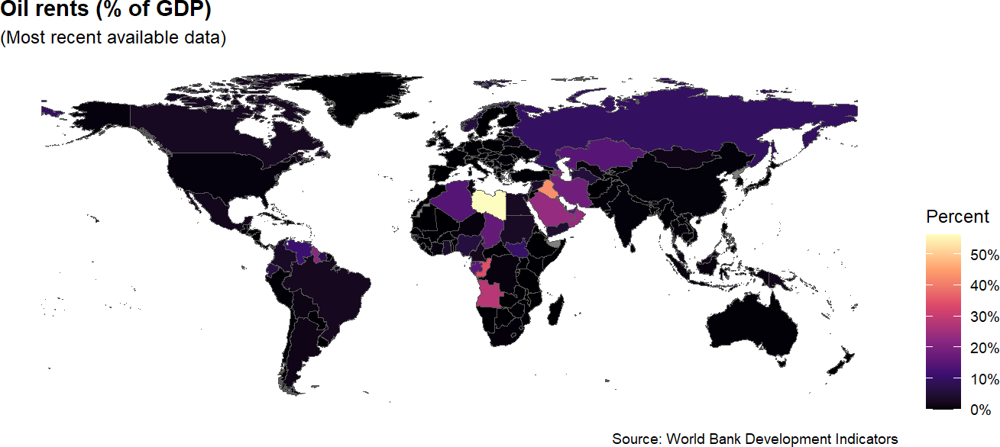
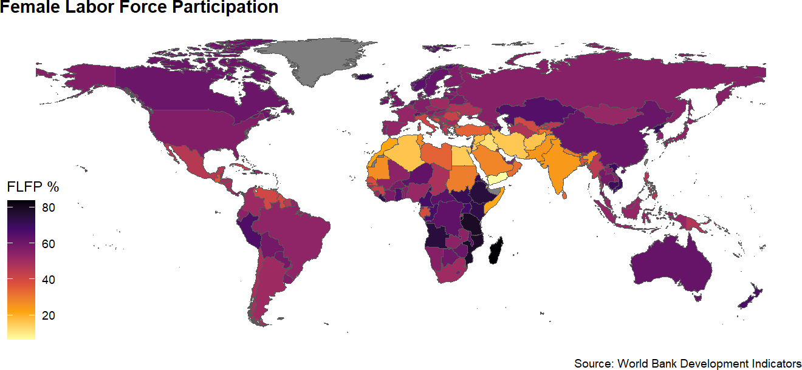
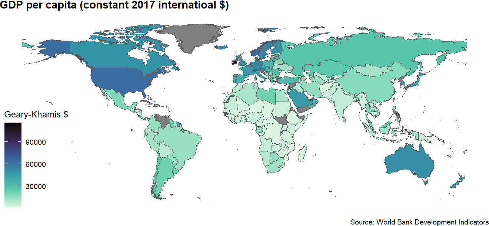

# create a hook to crop maps as recommended by pmassicotte
# must have `magick` and its dependencies installed
knitr::knit_hooks$set(crop = knitr::hook_pdfcrop)Module 3.1
Choropleth Maps
Prework
- Install
rnaturalearth(install.packages("rnaturalearth")) and have a look at the documentation - Install the
rnaturalearthdata package (install.packages("rnaturalearthdata")) - Install
ggthemes(install.packages("ggthemes"))and have a look at this post) for a brief explanation of how it works - Create a Quarto document called “module-3.1.qmd” in your modules folder for the code-along
- Install
magickand underlying file system to remove whitespace around maps - Then insert this code chunk somewhere in your module 3.1 Quarto document:
Overview
The focus of this module is going to be on how to make choropleth maps. A choropleth map is a type of data visualization used to show a geographical distribution of data where areas or regions are shaded based on quantities or levels represented in each area or region.
One important concept in mapping that we are going to come across this week: simple features. Simple features is a formal international standard for representing objects in the real world in digital space.
A “feature” is basically any object in the real world that can be represented in two or three-dimensional space. A tree or a house can be a feature as can a forest or a body of water. But in politics we are usually focused on mapping the political boundaries of different administrative units like countries, states or provinces, counties and cities.
Simple features allow us to work with such boundaries easily in a data frame in R. We can take all of the points associated with a geometry and store it in a special data frame column (usually labeled ‘geom’ or ‘geometry’). This ability to store all of the geographic information in one column differs from how spatial data are organized under the traditional spatial objects standard and makes it much easier to work with geographic data in R.
Using rnaturalearth
In this module we are going to be with the rnaturalearth package, which facilitates working with Natural Earth map data in R. Natural Earth is a public domain map dataset based on Tom Patterson’s Natural Earth projection that provides data suitable for making small-scale world, regional and country maps. Natural Earth contains country boundaries, first-order admin boundaries like provinces and states, urban polygons and more. rnaturalearth supports both simple features (sf) and spatial objects (sp) formats, but we are going to be focused on using simple features for the reasons stated earlier.
Grabbing country shapes with ne_countries()
Let’s start by loading country shapes using the ne_countries() function from rnaturalearth. We will start by loading rnaturalearth and dplyr. Next we will load the country boundaries into an object called world_map_df while filtering out Antarctica. Then, let’s glimpse() the data and have a closure look at the geometry column.
library(rnaturalearth)
library(dplyr)
world_map_df <- ne_countries(scale = "medium", returnclass = "sf") |>
filter(name != "Antarctica") # remove Antarctica
#world_map_df |>
#glimpse()
# view contents of geometry column
world_map_df |>
select(geometry) Simple feature collection with 240 features and 0 fields
Geometry type: MULTIPOLYGON
Dimension: XY
Bounding box: xmin: -180 ymin: -58.49229 xmax: 180 ymax: 83.59961
Geodetic CRS: +proj=longlat +datum=WGS84 +no_defs +ellps=WGS84 +towgs84=0,0,0
First 10 features:
geometry
1 MULTIPOLYGON (((-69.89912 1...
2 MULTIPOLYGON (((74.89131 37...
3 MULTIPOLYGON (((14.19082 -5...
4 MULTIPOLYGON (((-63.00122 1...
5 MULTIPOLYGON (((20.06396 42...
6 MULTIPOLYGON (((20.61133 60...
7 MULTIPOLYGON (((1.706055 42...
8 MULTIPOLYGON (((53.92783 24...
9 MULTIPOLYGON (((-64.54917 -...
10 MULTIPOLYGON (((45.55234 40...Make a map with geom_sf()
Now, let’s make our first choropleth map with the data. Let’s map World Bank income groups. Here we will use the special features geom_sf() from ggplot2 and for our aesthetics mapping we will specify fill = income_grp.
Beautify your map
The default ggplot settings are pretty good for a preview, but we could make it look a lot better. Let’s add some labels, a ggtheme map theme and the default viridis color mapping.
Using rnaturalearth to map other data
Now that we know how to make a map with Natural Earth shapes and geom_sf(), we can merge in data and map data from other sources. Let’s go ahead and merge some data on oil rents from the World Bank. We will do a left_join() based on iso3c country codes. In the World Bank data the iso3c codes are simply called “iso3c.” In rnaturalearth there are a number of options, but the best here for our purposes is “iso_a3”
Warning
At the time I made the video, the codes for “iso_a3” and some of the others were missing so I recommended using “iso_a3_eh.” But now the issue has been fixed, so please use “iso_a3.”
library(wbstats)
oil_rents_df <- wb_data(c(oil_rents_gdp = "NY.GDP.PETR.RT.ZS"), mrnev = 1)
rents_map_df <- left_join(world_map_df, oil_rents_df, join_by(iso_a3 == iso3c))
rents_map_df |>
select(last_col(5):last_col()) |> #select last 5 columns of df
glimpse() Rows: 240
Columns: 6
$ date <dbl> 2021, 2021, 2021, NA, 2021, NA, NA, 2021, 2021, 2021, 20…
$ oil_rents_gdp <dbl> 0.00000000, 0.01786951, 28.27443988, NA, 1.04218369, NA,…
$ obs_status <chr> NA, NA, NA, NA, NA, NA, NA, NA, NA, NA, NA, NA, NA, NA, …
$ footnote <chr> NA, NA, NA, NA, NA, NA, NA, NA, NA, NA, NA, NA, NA, NA, …
$ last_updated <date> 2023-05-10, 2023-05-10, 2023-05-10, NA, 2023-05-10, NA,…
$ geometry <MULTIPOLYGON [°]> MULTIPOLYGON (((-69.89912 1..., MULTIPOLYGO…Now we can map these data. Everything here is pretty much the same as before, except we change the fill to oil_rents_gdp. We will also add a subtitle and make a few other cosmetic changes like shifting the position of the legend title, bolding the plot title and changing the viridis color scale from discrete to continuous.
ggplot(data = rents_map_df) +
geom_sf(aes(fill = oil_rents_gdp)) + # shade based on oil rents
labs(
title = "Oil rents (% of GDP)",
subtitle = "(Most recent available data)", # add subtitle
fill = "Percent",
caption = "Source: World Bank Development Indicators"
) +
theme_map() +
theme(
legend.position = "right",
#legend.title = element_text(size = 8),
#legend.text = element_text(size = 6)
plot.title = element_text(face = "bold"), # move legend
) +
scale_fill_viridis_c( # chg from discrete (_d) to continuous (_c)
option = "magma", # chg to magma theme
labels = scales::label_percent(scale = 1) # add % label for legend
) 
Turn your map into a function
Sometimes you may want to map more than one variable in a paper or display variables with a map in an app. For these situations, it can help to create your own function that allows you to change various components of the map code without having to type out all of the code every time you want to create a map.
Create the map function
The first thing that you want to do is to write out the script for your function. That should include any packages that you need to run that may not already be loaded.
From there, you can build your function. The code for your function contains three elements: 1) a name; 2) the arguments you will include in your function; and 3) a code block of code that will execute when you call the function.
In this example, we are going to call our function create_map(). It is going to include five arguments: var_id, title, legend_title, theme and direction. var_id refers to the World Bank variable id, title and legend_title refer to the title of the plot and the title of the legend respectively. theme will allow the user to adjust the viridis theme. And direction refers to whether the color scale is light to dark or dark to light.
The code block will first join the country shapes to the selected World Bank data and then map those data by piping them into a ggplot() call. Everything is pretty similar to our previous use of ggplot() and geom_sf(), but one tricky part here is that we have to use eval(parse(text=var_id)))) to remove the quotes surrounding the variable code entered by the user.
library(rnaturalearth)
library(dplyr)
library(ggplot2)
library(ggthemes)
library(wbstats)
create_map <- function(var_id, title, legend_title, theme, direction){
ne_countries(scale = "medium", returnclass = "sf") |>
left_join(
wb_data(var_id, mrnev = 1), # change variable id
join_by(iso_a3 == iso3c)
) |>
filter(name != "Antarctica") |>
ggplot() +
geom_sf(aes(fill = eval(parse(text=var_id)))) + # remove quotes
labs(
title = title, # change title
fill = legend_title, # change legend title
caption = "Source: World Bank Development Indicators"
) +
theme_map() +
theme(
plot.title = element_text(face = "bold"),
) +
scale_fill_viridis_c(
option = "magma", # chg theme
direction = direction # change direction of scale
)
}Deploy the function in another document
To deploy the function in a Quarto or R Markdown dackument, we need to source it as an external R script. First we will save the previous code as a source document. Let’s name our file wb-maps.R and save it in a subdirectory called functions. From there, we can use the source() function so that we can call our create_map() function in subsequent code chunks in our document.
source("functions/wb-maps.R", local = knitr::knit_global())Now let’s call our create_map() function that we just made using female labor force particpation.
create_map(var_id = "SL.TLF.CACT.FE.ZS",
title= "Female Labor Force Participation",
legend_title = "FLFP %",
theme = "inferno",
direction = -1)
Now search for an indicator we want to use. We will look for something related to GDP per capita.
wb_search("GDP per capita") # A tibble: 24 × 3
indicator_id indicator indicator_desc
<chr> <chr> <chr>
1 5.51.01.10.gdp Per capita GDP growth GDP per capit…
2 6.0.GDPpc_constant GDP per capita, PPP (constant 2011 interna… GDP per capit…
3 NV.AGR.PCAP.KD.ZG Real agricultural GDP per capita growth ra… The growth ra…
4 NY.GDP.PCAP.CD GDP per capita (current US$) GDP per capit…
5 NY.GDP.PCAP.CN GDP per capita (current LCU) GDP per capit…
6 NY.GDP.PCAP.KD GDP per capita (constant 2010 US$) GDP per capit…
7 NY.GDP.PCAP.KD.ZG GDP per capita growth (annual %) Annual percen…
8 NY.GDP.PCAP.KN GDP per capita (constant LCU) GDP per capit…
9 NY.GDP.PCAP.PP.CD GDP per capita, PPP (current international… This indicato…
10 NY.GDP.PCAP.PP.KD GDP per capita, PPP (constant 2017 interna… GDP per capit…
# ℹ 14 more rowsNow let’s take that info. and use it to make a plot of GDP per capita.
create_map(var_id = "NY.GDP.PCAP.PP.KD",
title= "GDP per capita (constant 2017 internatioal $)",
legend_title = "Geary-Khamis $",
theme = "mako",
direction = -1)
There you go! That’s how we can build and use a map function to easily map different indicators in our document or web app.